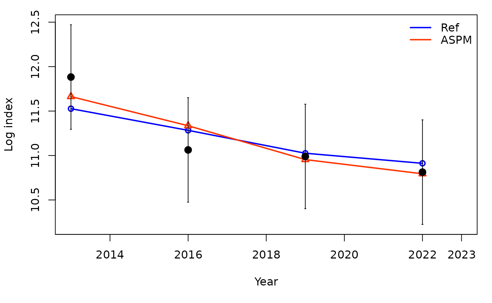

The application of the Age-Structured Production Model (ASPM) approach as a diagnostic can help identify misspecification of the production function. If, in the absence of composition data (likelihood weighting set to 0), the ASPM fits well to the indices of abundance that have good contrast, then the production function is likely to drive the stock dynamics and indices will provide information about the absolute abundance (Carvalho et al. 2017). If there is not a good fit to the indices, then the catch data and production function alone cannot explain the trajectories of the indices of relative abundance.
Model inputs
To run a stock synthesis model, 4 input files are required: starter,
forecast, control, and data. The input files for the example model can
be found within the ss3diags package and accessed as shown
below. Also, if you do not have r4ss installed, you will
need to install for this tutorial.
install.packages("pak")
pak::pkg_install("r4ss/r4ss")
library(r4ss)
files_path <- system.file("extdata", package = "ss3diags")
dir_tmp <- tempdir(check = TRUE)
dir_aspm <- file.path(dir_tmp, "aspm")
dir.create(dir_aspm, showWarnings = FALSE, recursive = TRUE)
list.files(files_path)## [1] "control.ss" "data.ss" "forecast.ss" "starter.ss"
file.copy(from = list.files(files_path, full.names = TRUE), to = dir_tmp)## [1] TRUE TRUE TRUE TRUEYou will need to make sure you have the SS
executable file either in your path or in the directory you are
running the ASPM from (in this case dir_aspm). An easy way
to get the latest release of stock synthesis is to use the
r4ss function get_ss3_exe().
r4ss::get_ss3_exe(dir = dir_tmp, version = "v3.30.21")## The stock synthesis executable for Linux v3.30.21 was downloaded to: /tmp/RtmpW6yFM8/ss3ASPM
Once you have the 4 input files, you need to determine what
components need to be turned off to run the ASPM. ASPM only depend on
index of abundance and catch data, so any composition data, recruitment
deviations, etc. need to be turned off. We provide an example that
includes multiple types of data and recruitment deviations, however, the
exact steps necessary for an individual model may vary depending on the
complexity and components included. Therefore these steps may not be
fully comprehensive for your model so be sure check what other
components you may need to change.
Below, we show how to use the r4ss functions to make all
the necessary changes to the control.ss and
ss.par files.
Generate files
In order to get the ss.par file, you need to run the
model once. This will also produce a new data and control file that we
will use as the input files. We will run the model in
dir_tmp then copy the new files over to
dir_aspm.
r4ss::run(dir = dir_tmp, verbose = FALSE, exe = "ss3")## [1] "ran model"
files <- c("data_echo.ss_new", "control.ss_new", "starter.ss", "forecast.ss", "ss.par", "ss3")
file.copy(from = file.path(dir_tmp, files), to = dir_aspm)## [1] TRUE TRUE TRUE TRUE TRUE TRUERecruitment Deviations
Set the recruitment devations in ss.par to 0.
par <- SS_readpar_3.30(parfile = file.path(dir_aspm, "ss.par"),
datsource = file.path(dir_aspm, "data_echo.ss_new"),
ctlsource = file.path(dir_aspm, "control.ss_new"),
verbose = FALSE)
par$recdev1## year recdev
## [1,] 2011 -0.06005247
## [2,] 2012 -0.01284866
## [3,] 2013 0.13478706
## [4,] 2014 0.11410144
## [5,] 2015 -0.08325396
## [6,] 2016 0.14556845
## [7,] 2017 -0.12973978
## [8,] 2018 -0.18308123
## [9,] 2019 0.02442762
## [10,] 2020 -0.08979813
## [11,] 2021 -0.07812317
## [12,] 2022 0.21801284
par$recdev_forecast## year recdev
## [1,] 2023 0
## [2,] 2024 0
## [3,] 2025 0
## [4,] 2026 0
## [5,] 2027 0
## [6,] 2028 0
## [7,] 2029 0
## [8,] 2030 0
## [9,] 2031 0
## [10,] 2032 0
par$recdev1[,"recdev"] <- 0
#Would run if forecasts recdevs were not already 0
#par$recdev_forecast[,"recdev"] <- 0
SS_writepar_3.30(parlist = par,
outfile = file.path(dir_aspm, "ss.par"),
overwrite = T, verbose = FALSE)## $headerlines
## [1] "# Number of parameters = 32 Objective function value = 754.301687441726 Maximum gradient component = 8.77017492766611e-07"
## [2] "# dummy_parm:"
## [3] "1.00000000000"
##
## $MG_parms
## INIT ESTIM
## NatM_p_1_Fem_GP_1 0.10000000 0.10000000
## L_at_Amin_Fem_GP_1 22.76900000 22.76899194
## L_at_Amax_Fem_GP_1 71.80720000 71.80721125
## VonBert_K_Fem_GP_1 0.14216500 0.14216482
## CV_young_Fem_GP_1 0.10000000 0.10000000
## CV_old_Fem_GP_1 0.10000000 0.10000000
## Wtlen_1_Fem_GP_1 0.00000244 0.00000244
## Wtlen_2_Fem_GP_1 3.34694000 3.34694000
## Mat50%_Fem_GP_1 55.00000000 55.00000000
## Mat_slope_Fem_GP_1 -0.25000000 -0.25000000
## Eggs_alpha_Fem_GP_1 1.00000000 1.00000000
## Eggs_beta_Fem_GP_1 0.00000000 0.00000000
## NatM_p_1_Mal_GP_1 0.00000000 0.00000000
## L_at_Amin_Mal_GP_1 0.00000000 0.00000000
## L_at_Amax_Mal_GP_1 0.00000000 0.00000000
## VonBert_K_Mal_GP_1 0.00000000 0.00000000
## CV_young_Mal_GP_1 0.00000000 0.00000000
## CV_old_Mal_GP_1 0.00000000 0.00000000
## Wtlen_1_Mal_GP_1 0.00000244 0.00000244
## Wtlen_2_Mal_GP_1 3.34694000 3.34694000
## CohortGrowDev 1.00000000 1.00000000
## FracFemale_GP_1 0.50000000 0.50000000
##
## $SR_parms
## INIT ESTIM
## SR_LN(R0) 8.9274 8.927395
## SR_BH_steep 0.8000 0.800000
## SR_sigmaR 0.6000 0.600000
## SR_regime 0.0000 0.000000
## SR_autocorr 0.0000 0.000000
##
## $recdev1
## year recdev
## [1,] 2011 0
## [2,] 2012 0
## [3,] 2013 0
## [4,] 2014 0
## [5,] 2015 0
## [6,] 2016 0
## [7,] 2017 0
## [8,] 2018 0
## [9,] 2019 0
## [10,] 2020 0
## [11,] 2021 0
## [12,] 2022 0
##
## $recdev_forecast
## year recdev
## [1,] 2023 0
## [2,] 2024 0
## [3,] 2025 0
## [4,] 2026 0
## [5,] 2027 0
## [6,] 2028 0
## [7,] 2029 0
## [8,] 2030 0
## [9,] 2031 0
## [10,] 2032 0
##
## $init_F
## [1] 0.1
##
## $Q_parms
## INIT ESTIM
## LnQ_base_SURVEY1(2) 0.476759 0.4767585
## Q_extraSD_SURVEY1(2) 0.000000 0.0000000
## LnQ_base_SURVEY2(3) -6.304070 -6.3040672
##
## $S_parms
## INIT ESTIM
## SizeSel_P_1_FISHERY(1) 56.51380 56.513807
## SizeSel_P_2_FISHERY(1) 20.17930 20.179340
## SizeSel_P_1_SURVEY1(2) 36.02330 36.023325
## SizeSel_P_2_SURVEY1(2) 5.33502 5.335021
## AgeSel_P_1_SURVEY2(3) 0.00000 0.000000
## AgeSel_P_2_SURVEY2(3) 0.00000 0.000000Starter File
Change the starter file to read from ss.par
(init_values_src = 1) and to use the new data and control
files.
starter <- SS_readstarter(file = file.path(dir_aspm, "starter.ss"), verbose = FALSE)
starter$datfile <- "data_echo.ss_new"
starter$ctlfile <- "control.ss_new"
starter$init_values_src <- 1
SS_writestarter(starter,
dir = dir_aspm,
overwrite = TRUE,
verbose = FALSE,
warn = FALSE)## Warning: The `warn` argument of `SS_writestarter()` is deprecated as of r4ss 1.45.0.
## This warning is displayed once every 8 hours.
## Call `lifecycle::last_lifecycle_warnings()` to see where this warning was
## generated.Control File
Some things in the control file that may need to be changed, are phases for parameters such as:
- length selectivity
- age selectivity
- size selectivity
- steepness
- sigmaR
- recruitment deviations
Additionally, the likelihood for some components may need to be turned off as well. You can do this using the lambda options in the control file. Some examples include:
- length-composition data
- age-composition data
- size-composition data
- initial F
control <- SS_readctl_3.30(file = file.path(dir_aspm, "control.ss_new"),
datlist = file.path(dir_aspm, "data_echo.ss_new"),
verbose = FALSE)
control$SR_parms## LO HI INIT PRIOR PR_SD PR_type PHASE env_var&link dev_link
## SR_LN(R0) 6.0 12 8.9274 10.3 10.0 0 1 0 0
## SR_BH_steep 0.2 1 0.8000 0.8 1.0 0 -4 0 0
## SR_sigmaR 0.0 2 0.6000 0.8 0.8 0 -4 0 0
## SR_regime -5.0 5 0.0000 0.0 1.0 0 -4 0 0
## SR_autocorr 0.0 0 0.0000 0.0 0.0 0 -99 0 0
## dev_minyr dev_maxyr dev_PH Block Block_Fxn
## SR_LN(R0) 0 0 0 0 0
## SR_BH_steep 0 0 0 0 0
## SR_sigmaR 0 0 0 0 0
## SR_regime 0 0 0 0 0
## SR_autocorr 0 0 0 0 0
# Would need to run if PHASES were positive for "steep" and "sigmaR"
#control$SR_parms[c(2,3),"PHASE"] <- c(-4,-4)
control$age_selex_parms## LO HI INIT PRIOR PR_SD PR_type PHASE env_var&link
## AgeSel_P_1_SURVEY2(3) 0 20 0 5 99 0 -99 0
## AgeSel_P_2_SURVEY2(3) 0 20 0 6 99 0 -99 0
## dev_link dev_minyr dev_maxyr dev_PH Block Block_Fxn
## AgeSel_P_1_SURVEY2(3) 0 0 0 0 0 0
## AgeSel_P_2_SURVEY2(3) 0 0 0 0 0 0
#would need to run if PHASES were positive for age selectivity
#control$age_selex_parms[,"PHASE"] <- control$age_selex_parms[,"PHASE"] * -1
control$size_selex_parms[,"PHASE"] <- control$size_selex_parms[,"PHASE"] * -1
control$recdev_early_phase <- -4
control$recdev_phase <- -2
new_lambdas <- data.frame(like_comp = c(4,4,5,5,7,7,9,9,9,10),
fleet = c(1,2,1,2,1,2,1,2,3,1),
phase = rep(1, 10),
value = rep(0, 10),
sizefreq_method = rep(1, 10))
new_lambdas## like_comp fleet phase value sizefreq_method
## 1 4 1 1 0 1
## 2 4 2 1 0 1
## 3 5 1 1 0 1
## 4 5 2 1 0 1
## 5 7 1 1 0 1
## 6 7 2 1 0 1
## 7 9 1 1 0 1
## 8 9 2 1 0 1
## 9 9 3 1 0 1
## 10 10 1 1 0 1
control$lambdas <- new_lambdas
control$N_lambdas <- nrow(new_lambdas)
SS_writectl_3.30(control, outfile = file.path(dir_aspm, "control.ss_new"),
overwrite = TRUE, verbose = FALSE)Run ASPM
r4ss::run(dir = dir_aspm, exe = "ss3", skipfinished = FALSE, verbose = FALSE)## [1] "ran model"Visualize Results
mods <- SSgetoutput(dirvec = c(
dir_tmp,
dir_aspm
), verbose = FALSE)
mods_sum <- SSsummarize(mods, verbose = FALSE)
SSplotComparisons(mods_sum, legendlabels = c("Ref", "ASPM"),
subplots = c(2,8,14), new = F)## showing uncertainty for all models## subplot 2: spawning biomass with uncertainty intervals## subplot 8: F value with uncertainty## subplot 14: index fits on a log scale